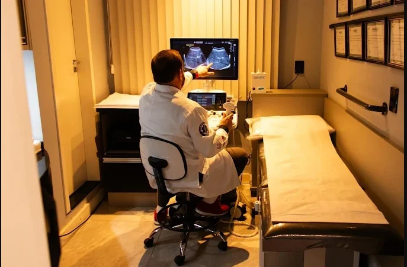

Confirme o exame
Informe à recepção qual exame foi solicitado. A equipe confirma a disponibilidade e os horários.
Um ambiente acolhedor no Centro de Lages para realizar seu exame, com orientações da equipe desde o agendamento.

Informe à recepção qual exame foi solicitado. A equipe confirma a disponibilidade e os horários.
O preparo varia conforme o exame. Siga as instruções específicas enviadas pela clínica.
Confirme os documentos, pedido médico e as condições do seu convênio, quando aplicável.
Fale com a recepção para saber como agendar.
Fale com a recepção pelo WhatsApp ou pelo telefone (49) 3019-3066 e informe qual exame foi solicitado. A equipe confirma a disponibilidade e os horários.
Confirme com a recepção os documentos necessários, incluindo o pedido médico e as condições do seu convênio, quando aplicável.
O preparo varia conforme o exame. A clínica envia as orientações específicas depois que o exame é confirmado.
Consulte a página de convênios e confirme cobertura e condições diretamente com a recepção.